Observações:
EXPLORANDO MAIS SOBRE OUTRAS:
A Técnica dos Triplos Nus:
Esta técnica é uma variação da técnica do par nu. Se houver três células em uma casa que tenham os mesmos 3 candidatos, você pode eliminar esses 3 candidatos de todas as outras células nessa casa.
A Técnica dos Triplos Nus
Vamos ver como colocar essa técnica em prática.
A célula número 2 foi totalmente anotada e podemos ver que as células R1-C5, R2-C4 e R2-C6 compartilham os mesmos candidatos, 5, 7 e/ou 9.
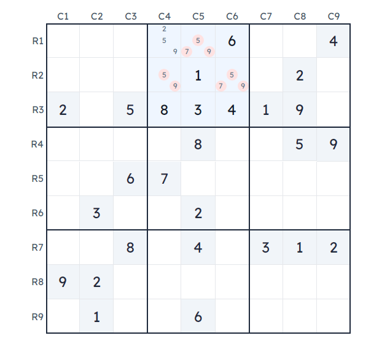
Se olharmos para a célula R1-C4, podemos ver que esta é a única célula que tem o candidato 2. Portanto, podemos eliminar com segurança os outros candidatos nesta célula, porque temos certeza de que 5 e 9 estarão nas outras células, e assim resta apenas o 2.
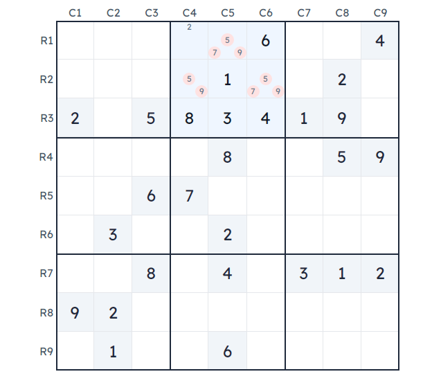
Outro exemplo mais complexo
O exemplo anterior foi bastante óbvio e Fácil de aplicar. Neste novo exemplo, veremos que é possível ter trios combinando várias células.
Na célula número 7, todas as células estão anotadas. Podemos ver que as três células marcadas têm cada uma dois candidatos, mas se colocarmos os candidatos juntos, forma-se um trio (candidatos 1, 3 e 7).
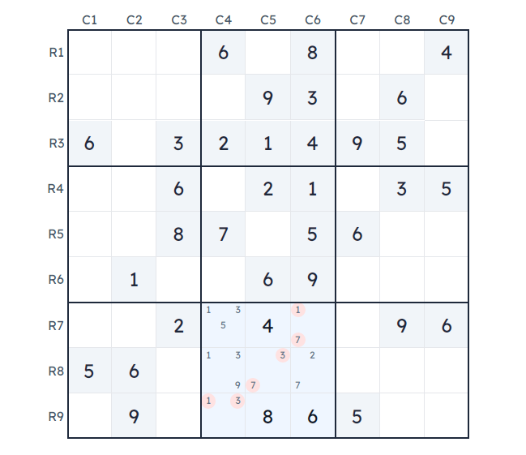
Neste caso, nenhuma outra célula pode ser 1, 3 ou 7, então podemos eliminá-las de todas as outras células.
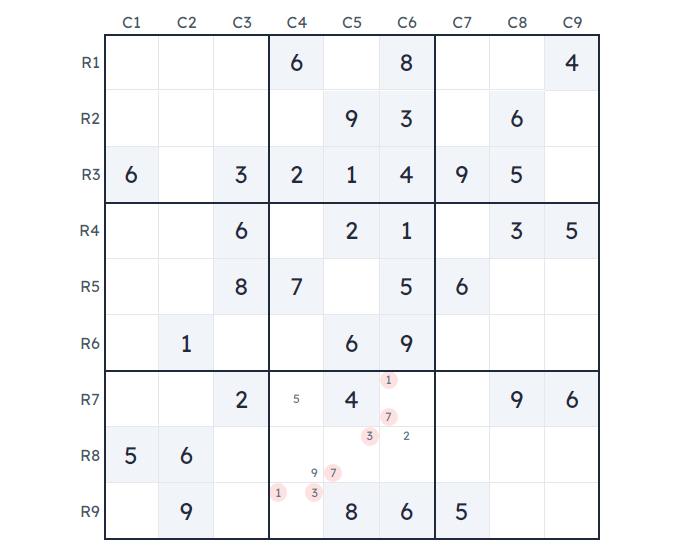
A Técnica do Par Oculto:
Esta técnica é muito fácil de entender, mas você terá que ter cuidado para detectar pares ocultos.
Se houver duas células em uma casa onde há dois candidatos que não aparecem em nenhum outro lugar fora dessas células na mesma casa, esses candidatos devem ser colocados em ambas as células.
Todos os outros candidatos podem então ser eliminados dessas duas células.
Vamos olhar de perto a coluna C5.
As células R2-C5 e R7-C5 são as únicas células que têm 2 e 5 como candidatos.
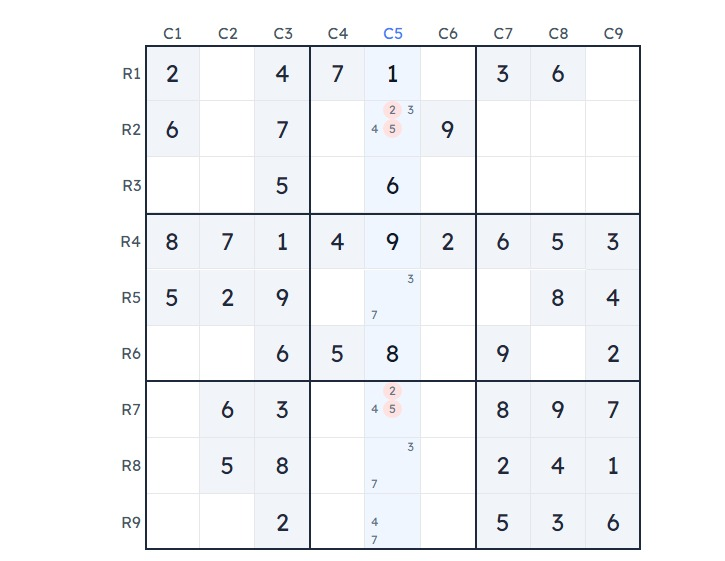
Portanto, é seguro excluir os outros candidatos nessas células.
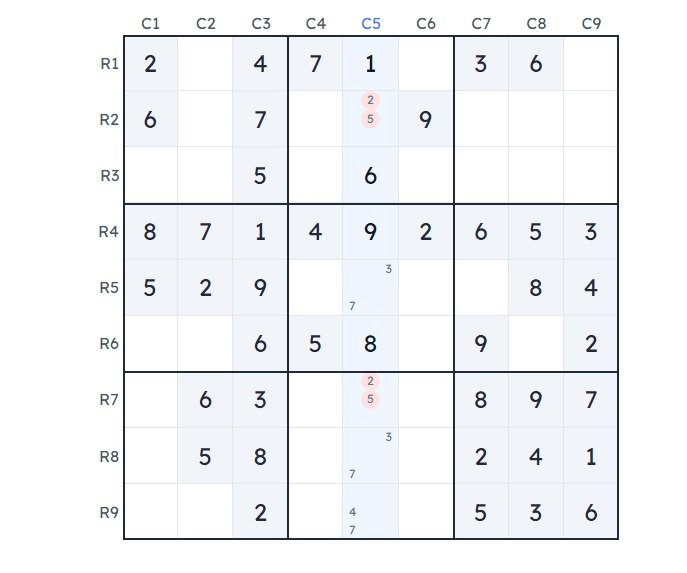
A Técnica X-Wing:
A técnica X-Wing trabalhará sua concentração, sua capacidade de analisar a grade, e será bastante divertido de fazer.
Vamos dar uma olhada de perto nas linhas R2 e R4 que estão selecionadas. Podemos ver que há apenas duas células em cada linha que têm o número candidato 8.
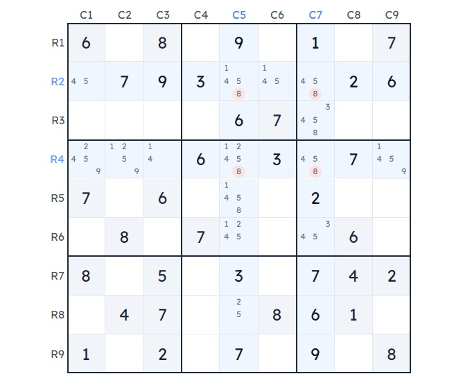
Finalmente, se olharmos de perto, essas quatro células formam um X, pois estão perfeitamente alinhadas.
 Se a célula R2-C5 for um 8, então a célula R4-C7 é necessariamente um 8. Caso contrário, se R2-C7 for um 8, então R4-C5 é necessariamente um 8.
Se a célula R2-C5 for um 8, então a célula R4-C7 é necessariamente um 8. Caso contrário, se R2-C7 for um 8, então R4-C5 é necessariamente um 8.
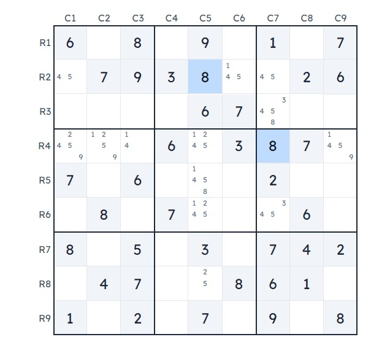
Em qualquer caso, é impossível que quaisquer outras células companheiras além dessas quatro células sejam um 8, então podemos remover com segurança todos os candidatos.
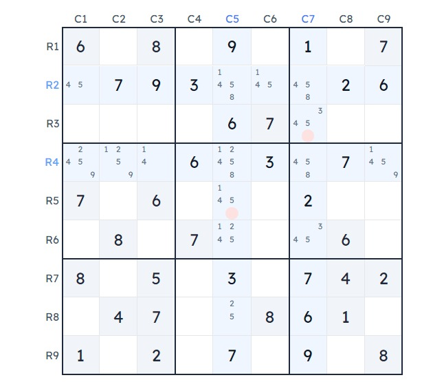
A técnica X-Wing é procurar quatro células que estão alinhadas (que formam um X) e que têm o mesmo candidato que não aparece em nenhum outro lugar na mesma linha ou coluna. Este candidato comum é chamado de dígito peixe.
Um segundo exemplo, mas desta vez em uma coluna
Anteriormente, vimos um exemplo de um X-Wing onde as linhas eram o conjunto base.
Desta vez, veremos um exemplo com as colunas como o conjunto base.
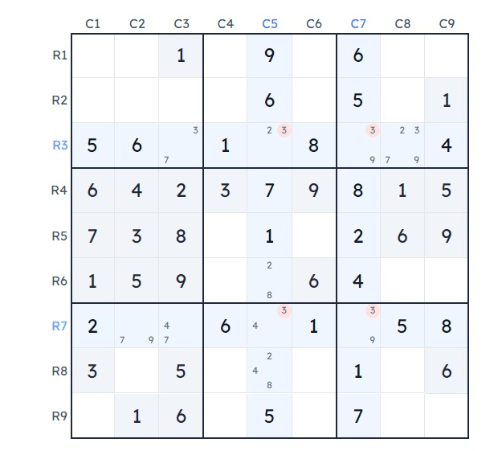
Se olharmos para as colunas C5 e C7, vemos que para ambas as colunas, apenas duas células têm o número 3 como candidato.
 Como essas quatro células formam um X (ou retângulo), podemos aplicar a técnica X-Wing e remover todos os candidatos ao número 3 das outras células na mesma casa.
Como essas quatro células formam um X (ou retângulo), podemos aplicar a técnica X-Wing e remover todos os candidatos ao número 3 das outras células na mesma casa.
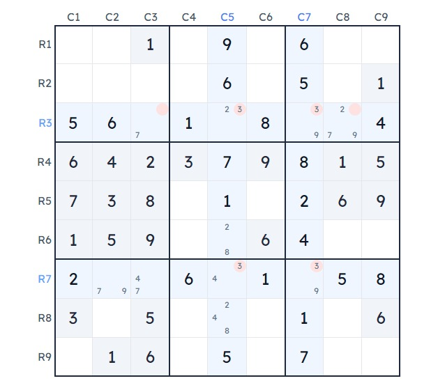
A técnica do peixe-espada:
A técnica de swordfish segue o mesmo princípio que o w wing, com a diferença de ter três conjuntos básicos em vez de dois.
Exemplos e prática da técnica do swordfish: Vamos olhar de perto a grade de sudoku abaixo.
O 6 é a figura do peixe e as linhas R1, R6 e R9 são os conjuntos base.
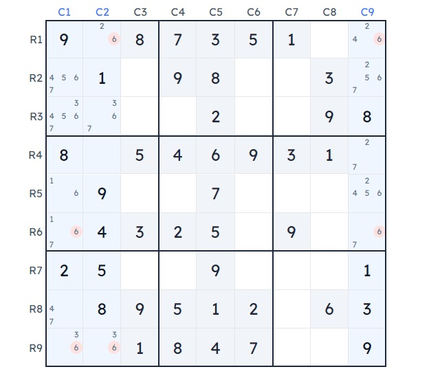
Os candidatos para o número 6 nas linhas R1, R6 e R9 alinham-se perfeitamente em 3 colunas C1, C2 e C9.
Existem apenas duas opções possíveis.
Opção número um, as células R1-C2, R9-C1 e R6-C9 contêm o dígito 6.
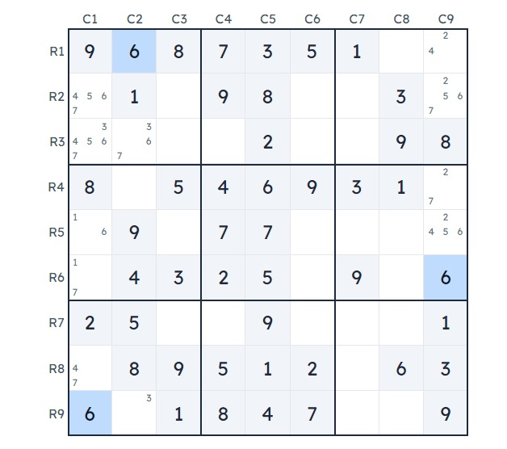
Opção número dois, as células R1-C9, R6-C1 e R9-C2 contêm o número 6.
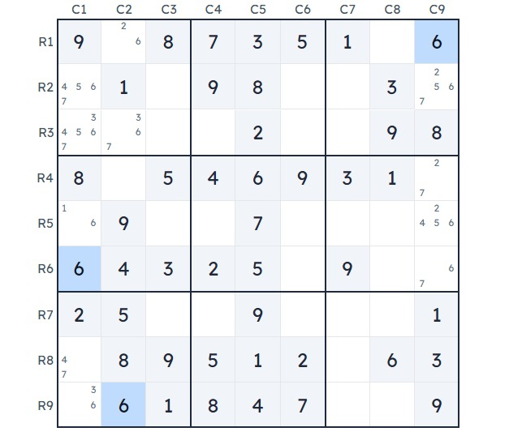
Em qualquer caso, esses 3 conjuntos básicos cobrem as colunas alinhadas, o que significa que 6 não pode aparecer em nenhum outro lugar nessas colunas.
Portanto, podemos remover com confiança o candidato número 6 para as células companheiras.
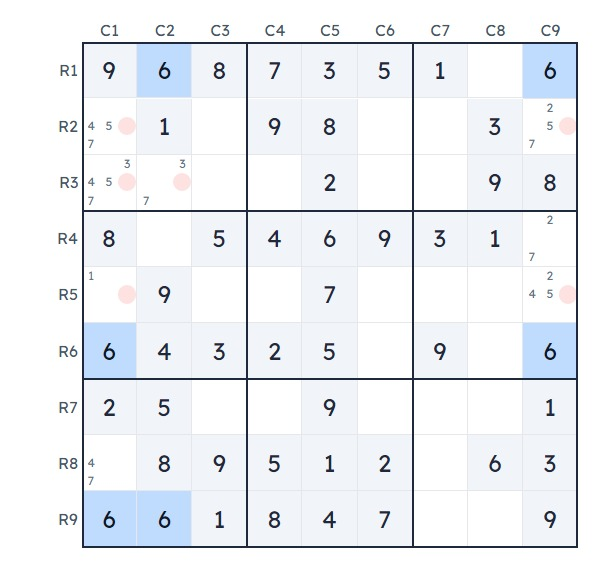
Link:
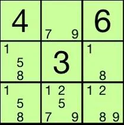
Na caixa, existem apenas três células que podem conter 1, 5 ou 8. Como nenhum outro número pode entrar nessas células, esses números devem ir nessas células. Portanto, 1, 5 e 8 podem ser removidos das outras células da caixa.
Alternativamente, 2/7/9 só pode estar em 3 células, então 1/5/8 pode ser removido dessas células.
1, 5 e 8 são os ÚNICOS candidatos nesses quadrados para aquela caixa 3x3 e, portanto, podem ser eliminados como candidatos dos outros quadrados.
Suponha que você coloque um 1 em uma célula fora do triplo (por exemplo, a célula inferior direita). Então, tente preencher os números no triplo. Algo vai dar errado.
Este exemplo mostra os dois tipos
Todos os subconjuntos usam 1 setor de linha, coluna ou caixa
N células com os mesmos n dígitos (158) nu (e sem outros valores) não importa se é 158,18,15,58 ou até mesmo apenas 1,5,8 em três células, é um conjunto de 3 dígitos que não usa (combinações ou permutações.)
um conjunto de células contendo um conjunto fixo de dígitos.
O mesmo cenário também se aplica para oculto, exceto que é o inverso.
N dígitos com n células (279) ocultos (nenhuma outra célula contém o valor) a mesma ideia acima, exceto que desta vez estamos procurando um conjunto de células.
Nu remove 158 de todas as outras células que podem ver todas as células 1,5,8. (individualmente faça cada dígito) r3c23 - 158
Oculto remove suas células de todos os outros dígitos. Ou seja, 134568 não pode usar essas células, no exemplo é r3c23 - 1,5,8
mais 1 exclusão um pouco mais difícil
Para cada dígito de um conjunto oculto, qualquer célula que possa ver todas as cópias do referido dígito também é excluída.
Esta exclusão é vista com o acima como
"2" é removido de r3c456789 e "7" é removido de r456789c2
À parte Por que é chamado de nu? Porque o conjunto é os únicos valores na célula
Por que é chamado de oculto? Porque o conjunto está se escondendo atrás de valores.
Em linguagem complicada de resolução Nu usa espaço RC A união das restrições Rn, Cn, Bn que compõem as marcas de lápis que você vê. Então eles estão nus, pois são os valores exclusivamente visíveis para as células selecionadas.
Conjuntos ocultos usam, espaço Rn, Cn, Bn individualmente.
Como oculto usa 1 de 3 espaços em vez da união como RC, eles se tornam obscurecidos e difíceis de ver quando pms são usados, pois está se escondendo atrás de outros 2 espaços.
Esta exclusão é vista com o acima como
"2" é removido de r3c456789 e "7" é removido de r456789c2
À parte Por que é chamado de nu? Porque o conjunto é os únicos valores na célula
Por que é chamado de oculto? Porque o conjunto está se escondendo atrás de valores.
Em linguagem complicada de resolução Nu usa espaço RC A união das restrições Rn, Cn, Bn que compõem as marcas de lápis que você vê. Então eles estão nus, pois são os valores exclusivamente visíveis para as células selecionadas.
Conjuntos ocultos usam, espaço Rn, Cn, Bn individualmente.
Como oculto usa 1 de 3 espaços em vez da união como RC, eles se tornam obscurecidos e difíceis de ver quando pms são usados, pois está se escondendo atrás de outros 2 espaços.
Todos os Subconjuntos Ocultos funcionam da mesma forma, a única coisa que muda é o número de células e candidatos afetados pela jogada. Pegue o Par Oculto: Se você conseguir encontrar duas células dentro de uma casa de forma que dois candidatos não apareçam em nenhum outro lugar fora dessas células naquela casa, esses dois candidatos devem ser colocados nas duas células. Todos os outros candidatos podem, portanto, ser eliminados. ... As Trincas Ocultas funcionam da mesma forma que os Pares Ocultos, só que com três células e três candidatos.
E é aqui que eu me confundo: aplicando essa regra ao seu exemplo, eu não identifico a trinca 158, porque há 1s e 5s fora das células naquele bloco, então a regra não corresponde. No entanto, pela regra, eu vou encontrar a trinca 279, e isso me permite remover os 1s e 5s extras, revelando a trinca 158 também.
Você postou a regra para um Hidden Subset (Subconjunto Oculto), mas estamos discutindo um Naked Subset (Subconjunto Nu).
Essas duas coisas são o INVERSO uma da outra.
Em ambos os tipos, há um número de células onde o número possível de candidatos é o mesmo que o número de células.
A diferença é que em um Naked Subset, os candidatos 'Nus' são os únicos que aparecem nessas células, embora possam aparecer em outras células e podem ser removidos das outras células.
Em um Hidden Subset, nossos candidatos só aparecem nessas células, junto com OUTROS candidatos que podem ser removidos dessas células.
Então, um Naked Pair (Par Nu) tem duas células onde os únicos dois candidatos podem ser removidos de quaisquer outras células.
Um Hidden Pair (Par Oculto) tem duas células onde são os únicos lugares que dois candidatos aparecem e, portanto, quaisquer outros candidatos podem ser removidos dessas duas células.
Link:
Técnica de Pares Ocultos no Sudoku e Exemplos:
Pares ocultos ocorrem quando duas células dentro da mesma linha, coluna ou bloco 3x3 compartilham dois números candidatos que nenhuma outra célula contém. As duas células com esse conjunto oculto de números podem conter outros números candidatos, por isso são consideradas ocultas. Você pode eliminar todos os outros números candidatos dessas células porque, logicamente, as células devem conter uma das duas opções do par oculto.
Essa estratégia de Sudoku é ótima tanto para iniciantes que estão aprendendo a jogar quanto para jogadores avançados que utilizam técnicas baseadas em equivalência, como o anel Phistomefel. Encontrar pares ocultos ajuda a eliminar candidatos e resolver seu quebra-cabeça de Sudoku mais rapidamente.
Como Encontrar Pares Ocultos
Lembre-se, pares ocultos devem atender aos seguintes critérios:
Duas células dentro da mesma linha, coluna ou bloco 3x3 compartilham exatamente dois números candidatos.
Os dois números candidatos não aparecem em nenhuma outra célula dentro dessa linha, coluna ou bloco.
Outros candidatos que não fazem parte do par oculto aparecem em pelo menos uma das duas células do par oculto.
Para identificar pares ocultos, use o modo de candidatos para anotar todos os números candidatos possíveis em cada célula. Em seguida, examine cada unidade em busca de duas células com os mesmos dois números candidatos. Certifique-se de que esses números não apareçam em nenhuma outra célula dentro dessa unidade. Por exemplo, se uma célula de uma linha tiver como candidatos 1, 3 e 5, outra célula tiver como candidatos 2, 3 e 5, e 3 e 5 não forem candidatos em nenhuma outra célula daquela linha, então 3 e 5 formam o par oculto.
Triplos nus e quartetos nus frequentemente contêm pares ocultos, portanto, lembre-se de examinar toda a unidade e observar atentamente as células que contêm múltiplos candidatos.
Pratique Encontrar Pares Ocultos
Você consegue encontrar os Pares Ocultos no quebra-cabeça? Verifique sua resposta pressionando o botão de Dica e depois clicando na seta certa para entender a lógica.
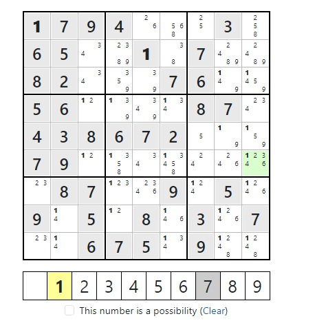
Exemplos de Par Oculto
Pares ocultos não apenas ajudam a eliminar números em duas células. Eles frequentemente criam reações em cadeia, permitindo que você encontre respostas e elimine números em outras partes dos quebra-cabeças. Ao procurar pares ocultos, você pode até descobrir um único candidato que leva à técnica do candidato bloqueado. Aqui estão alguns exemplos mostrando como eles funcionam na prática.
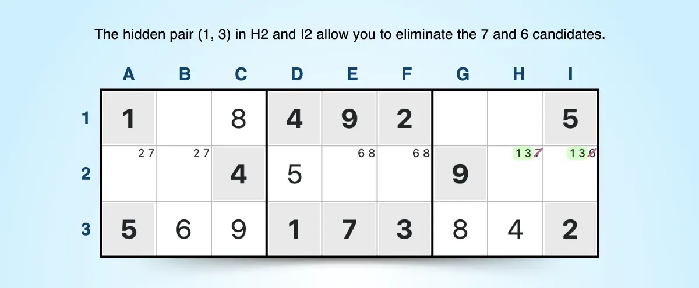
Neste exemplo, você pode encontrar o par oculto (1, 3) nas células H2 e I2. Verifique se é um par oculto observando se 1 ou 3 aparece em qualquer outra célula da linha 2. Como não aparece, você pode remover o candidato 7 em H2 e o candidato 6 em I2.
Além do par oculto, existem dois conjuntos de pares nus na linha 2: A2 e B2 (2, 7) e E2 e F2 (6, 8). Se você notou os pares nus antes do par oculto, eles também teriam permitido eliminar o 7 em H2 e o 6 em I2, porque os pares nus indicam que nenhuma outra célula daquela linha pode conter 2, 7, 6 ou 8.
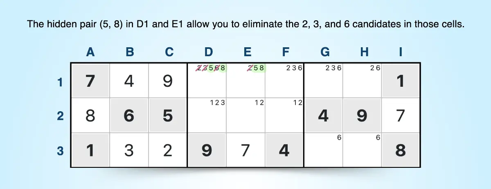
Este exemplo mostra o par oculto (5, 8) nas células D1 e E1 do bloco central. Verifique isso conferindo se 5 e 8 não aparecem em nenhuma outra célula do bloco 3x3 do meio. Agora você pode eliminar os candidatos 2, 3 e 6 em D1 e o candidato 2 em E1.
Olhando para o bloco do meio, isso deixa você com 6 como único oculto em F1 e 3 como único oculto em D2. Ao identificar o par oculto, você conseguiu encontrar a resposta para duas células dentro do bloco.
Pares Ocultos em uma Coluna
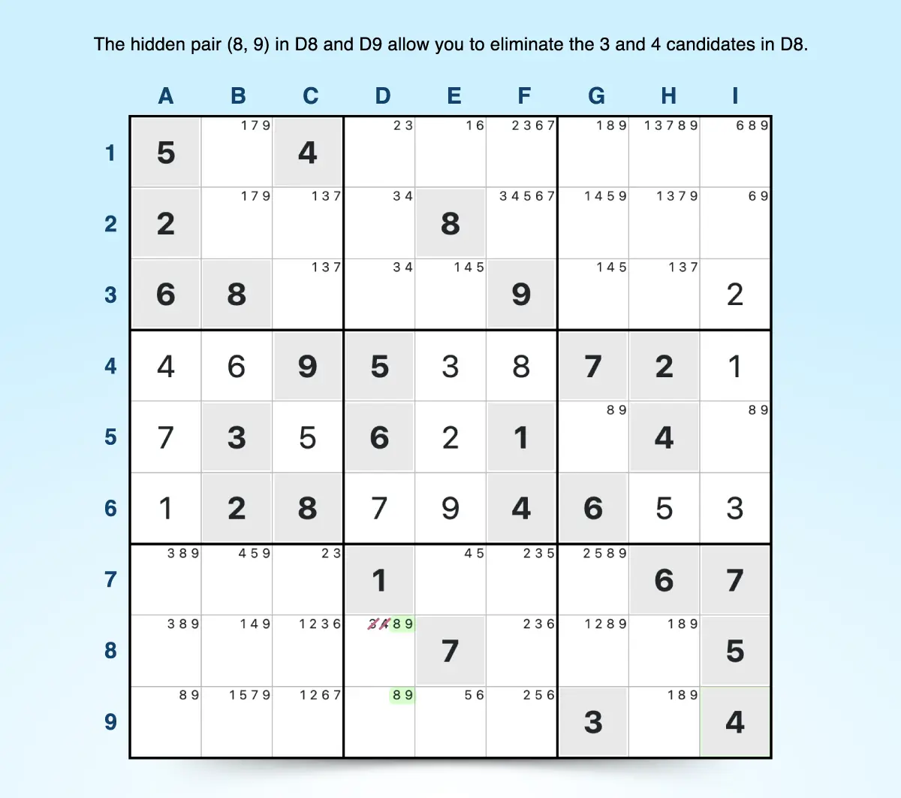
Há um par oculto (8, 9) nas células D8 e D9 da coluna D. Isso permite que você elimine os candidatos 3 e 4 em D8, formando um par nu (3, 4) em D2 e D3 e um único oculto (2) em D1. O par nu (3, 4) ajuda a eliminar os outros candidatos 3 e 4 no bloco 3x3 central superior.
Procurar pares ocultos é uma ótima maneira de aprimorar suas habilidades no Sudoku e resolver puzzles de Sudoku intermediários ou difíceis. Depois que você se sentir confortável com pares ocultos, pode facilmente adicionar trincas ocultas ao seu conjunto de habilidades de resolução. Leia nosso blog para mais técnicas de resolução de Sudoku e explore nosso arquivo para centenas de jogos de Sudoku gratuitos.